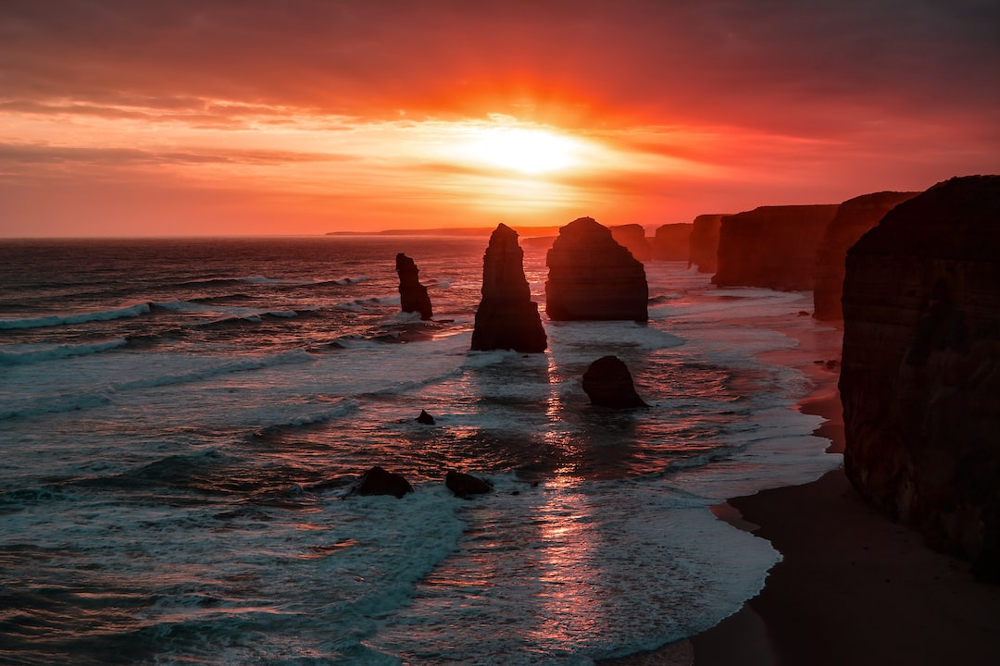
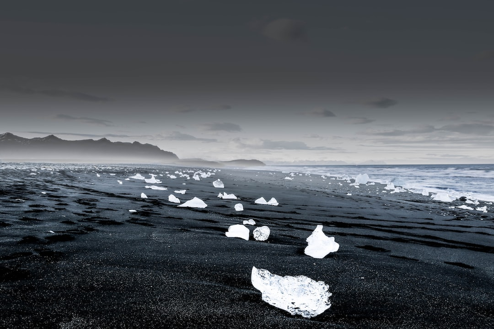

Art no. 1
This art provide dramatic scenery. They have wonderfully vibrant colors. They produce amazing natural art. They can affect your mood.

Art no. 2
Art involving nature can be done simply to display the beauty of the natural world around us and to make scientific observations.